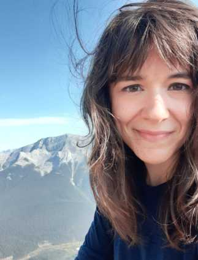

|  | Amélie BigrasSoftware Programmer & Biligual Teacher I am a Web Developer and a Certified Teacher. I 💖 being in nature 🌳, painting beside my dog 🶠and learning computer programming 💻. |
| Dates | Work |
|---|---|
| Jan 2016 - June 2022 | High School Science & Math Teacher |
| Dec 2014 - Jul 2016 | Somagen Diagnostics - Translator & Tender Administrator |
| Javascript | 🌟🌟🌟🌟 |
| HTML | 🌟🌟🌟🌟 |
| CSS | 🌟🌟🌟🌟 |
| Python | 🌟🌟🌟 |